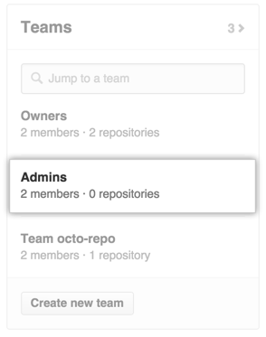
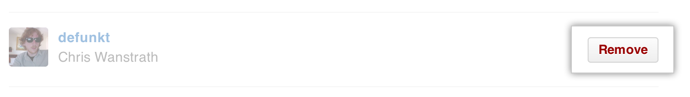

Teams are used to manage access to repositories in an organization. If a member of your organization no longer requires access to certain repositories, you can remove them from the team that allows that access.
Warning: When you remove a user from a team in your organization, their private forks of the private repositories their team had access to are deleted. They may still have local copies of those forks. However, they will not be able to sync them with the original repositories.
Removing a team member
In the top right corner of any page, click your username.

On the left side of your profile page, under "Organizations", click the icon for your organization.

On the right side of the organization profile page, under Teams, click the name of the team. 
Next to the name of the team member you want to remove, click Remove. 